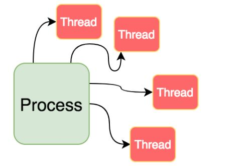

𝗛𝗼𝘄 𝗱𝗼 𝗺𝗼𝗱𝗲𝗿𝗻 𝗮𝗽𝗽𝘀 𝗱𝗼 𝘀𝗼 𝗺𝗮𝗻𝘆 𝘁𝗵𝗶𝗻𝗴𝘀 𝗮𝘁 𝗼𝗻𝗰𝗲 𝘄𝗶𝘁𝗵𝗼𝘂𝘁 𝗳𝗿𝗲𝗲𝘇𝗶𝗻𝗴?
Ashmita Pandey · · Concurrency · Backend Engineering
𝗛𝗼𝘄 𝗱𝗼 𝗺𝗼𝗱𝗲𝗿𝗻 𝗮𝗽𝗽𝘀 𝗱𝗼 𝘀𝗼 𝗺𝗮𝗻𝘆 𝘁𝗵𝗶𝗻𝗴𝘀 𝗮𝘁 𝗼𝗻𝗰𝗲 𝘄𝗶𝘁𝗵𝗼𝘂𝘁 𝗳𝗿𝗲𝗲𝘇𝗶𝗻𝗴? Hi everyone, I’m Ashmita 👋 Today I want to share a key concept that often gets confusing but let’s discuss it in a simpler way. We are talking about the difference between a 𝗣𝗿𝗼𝗰𝗲𝘀𝘀 𝗮𝗻𝗱 𝗮 𝗧𝗵𝗿𝗲𝗮𝗱. Let’s break it down 👇 A process is a program in execution. Think of it as an independent unit with its own memory. A thread is a smaller part within that process, allowing multiple tasks to happen at the same time. ➤ Processes are heavier, take more time to create and run in isolation ➤ Threads are lightweight, faster to create and share memory within a process 𝗙𝗼𝗿 𝗲𝘅𝗮𝗺𝗽𝗹𝗲, 𝗶𝗻 𝗮 𝘄𝗲𝗯 𝗯𝗿𝗼𝘄𝘀𝗲𝗿: One thread loads the webpage, another handles scrolling and clicks, while another runs JavaScript. Without threads, everything would freeze until one task finishes. Or in a word processor: one thread handles typing while another updates formatting in the background. Processes offer better isolation and safety Threads offer speed and multitasking but need careful handling since they share resources 𝗧𝗟;𝗗𝗥: ➤ Process = heavier, isolated, safe ➤ Thread = faster, shared, efficient #OperatingSystems #ThreadsVsProcesses #LearningInPublic
